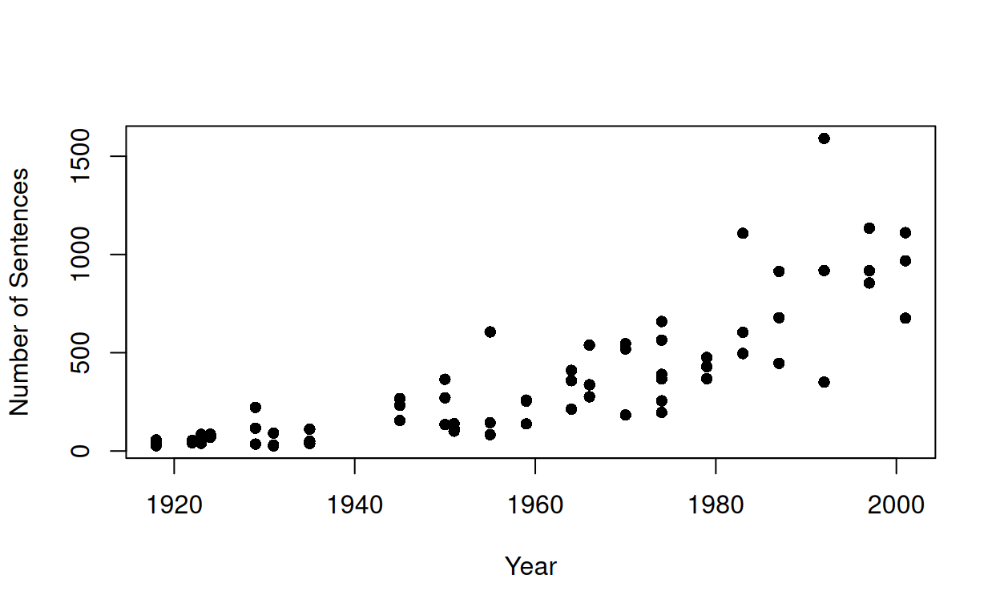
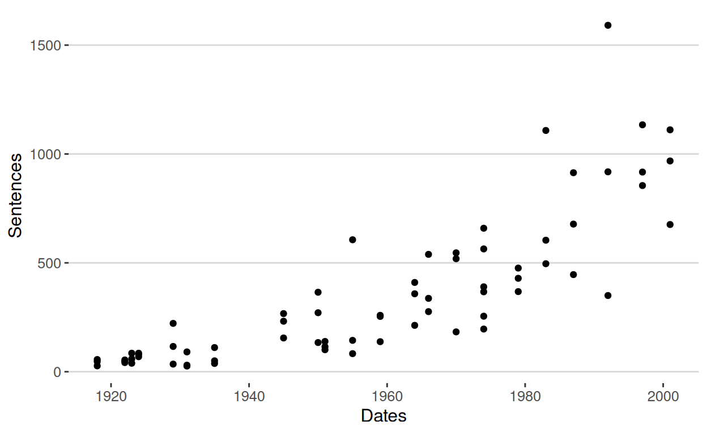

this page provides a textual analysis of FOMC policy statements using dictionary approaches. the aim being finding trends in inflation, uncertainty, and economic output language. The analysis builds document-feature matrices, applies dictionaries to measure particular themes, and tokenises text using the quanteda package
In this example, we are going to look at the use of uncertainty language as well as output and inflation topics in a subsection of Federal Open Market Committee (FOMC) statements made by the U.S. central bank.
Because the filenames actually have the date of the meeting, we are going to collect the filenames in an object
Then what we are going to do is to read in a bunch of the FOMC statements
Classes 'readtext' and 'data.frame': 96 obs. of 2 variables:
$ doc_id: chr "2005_02_1.txt" "2005_02_2.txt" "2005_02_3.txt" "2005_02_4.txt" ...
$ text : chr "The Federal Open Market Committee decided today to raise its target for the federal funds rate by 25 basis poin"| __truncated__ "The Federal Open Market Committee decided today to keep its target for the federal funds rate at 2 1$4 percent."| __truncated__ "The Federal Open Market Committee decided today to raise its target for the federal funds rate by 25 basis poin"| __truncated__ "The Federal Open Market Committee decided today to raise its target for the federal funds rate by 50 basis poin"| __truncated__ ... 2005_02_1.txt
"The Federal Open Market Committee decided today to raise its target for the federal funds rate by 25 basis points to 2 1$4 percent. \n\nThe Committee be" This step loads the FOMC statements and converts them into a corpus object, which allows us to analyse the text systematically.
Text Types Tokens Sentences
1 2005_02_1.txt 113 177 8
2 2005_02_2.txt 114 187 8
3 2005_02_3.txt 110 174 7
4 2005_02_4.txt 95 130 5
5 2005_03_1.txt 109 173 6
6 2005_03_2.txt 124 191 7Then we might want to add in doc-level meta-info (Note that this was disabled in the current version (4.0.2
#metadoc(txtCorpus, "language") <- "english"
#metadoc(txtCorpus, "owner") <- "Nicole Rae Baerg"
#metadoc(txtCorpus, "docsource") <- paste("txts", 1:ndoc(txtCorpus))
#head(summary(txtCorpus, showmeta = TRUE))To make sure that the statement has information about the economy and uncertainty, we might want to check using our KWIC command
Keyword-in-context with 6 matches.
[2007_05_2.txt, 53]
[2007_06_2.txt, 65]
[2007_08_2.txt, 72]
[2007_09_3.txt, 78]
[2007_09_4.txt, 75]
[2007_10_1.txt, 78]
significant risk that economic activity
significant risk that economic activity
the risk that economic activity
on the broader economy that
on the broader economy that
on the broader economy that
| might |
| might |
| might |
| might |
| might |
| might |
grow more slowly than anticipated
grow more slowly than anticipated
grow less than anticipated.
otherwise arise from the disruptions
otherwise arise from the disruptions
otherwise arise from the disruptionsWe want to tokenize our text. This is how we would do it (note concatenator for the n-grams)
tokensFromCorp <- tokens(txtCorpus)
dfmCorp <- dfm(tokensFromCorp)
topfeatures(dfmCorp, 20) the to . , and inflation in
1126 789 689 681 438 385 370
of committee growth economic that federal be
338 285 236 235 216 194 162
policy have for on market will
160 156 155 152 146 140 In order to show how to apply a dictionary, we are going to import a dictionary which is already a list. In this case, we will use the uncertainty dictionary from the finance literature.
test_dict <- dictionary(list(specific = c("clear*", "certain*", "unequi*"),
vague = c("probably", "uncert*", "might", "could")))
precision <- dfm_lookup(dfmCorp, dictionary = test_dict)
tail(precision)Document-feature matrix of: 6 documents, 2 features (83.33% sparse) and 0 docvars.
features
docs specific vague
2007_10_3.txt 0 0
2007_10_4.txt 0 0
2007_11_1.txt 0 1
2007_11_2.txt 0 0
2007_11_3.txt 0 1
2007_11_4.txt 0 0test_dict2 <- dictionary(list(consumerinflation = c("inflation", "price", "cost", "housing"), output = c("growth", "gap", "employment", "output gap"), producerinflation = c("oil", "trucks", "tarrif")))
topics <- dfm_lookup(dfmCorp, dictionary = test_dict2)
head(topics)Document-feature matrix of: 6 documents, 3 features (33.33% sparse) and 0 docvars.
features
docs consumerinflation output producerinflation
2005_02_1.txt 5 2 0
2005_02_2.txt 5 3 0
2005_02_3.txt 5 2 0
2005_02_4.txt 3 2 0
2005_03_1.txt 5 2 0
2005_03_2.txt 4 1 0test_sentiment <- dictionary(list(positive = c("agree", "yes", "happy"), negative = c("sad", "disagree", "no"), neutral = c("ambiguous", "maybe", "content")))
sentiment <- dfm_lookup(dfmCorp, dictionary = test_sentiment)
sentimentDocument-feature matrix of: 96 documents, 3 features (100.00% sparse) and 0 docvars.
features
docs positive negative neutral
2005_02_1.txt 0 0 0
2005_02_2.txt 0 0 0
2005_02_3.txt 0 0 0
2005_02_4.txt 0 0 0
2005_03_1.txt 0 0 0
2005_03_2.txt 0 0 0
[ reached max_ndoc ... 90 more documents ]We have to make sure that this is a dictionary object. The next thing that we will do is to make the dfm using only the terms that appear in our dictionary. We build a new list of uncertainty words that start with the letter a and call this our A uncertainty dictionary’.
#read in dictionary - would need files of type YOSHIKODER
Uncertaintydict <- dictionary(list(uncertainty = c("abeyance",
"abeyances",
"almost",
"alteration",
"alterations",
"ambiguities",
"ambiguity",
"ambiguous",
"anomalies",
"anomalous",
"anomalously",
"anomaly",
"anticipate",
"anticipated",
"anticipates",
"anticipating",
"anticipation",
"anticipations",
"apparent",
"apparently",
"appear",
"appeared",
"appearing",
"appears",
"approximate",
"approximated",
"approximately",
"approximates",
"approximating",
"approximation",
"approximations",
"arbitrarily",
"arbitrariness",
"arbitrary",
"assume",
"assumed",
"assumes",
"assuming",
"assumption",
"assumptions"),
inflation = c("inflation", "price", "cost", "oil", "housing"), output = c("growth", "gap", "employment")))Document-feature matrix of: 6 documents, 3 features (0.00% sparse) and 0 docvars.
features
docs uncertainty inflation output
2005_02_1.txt 1 5 2
2005_02_2.txt 1 5 3
2005_02_3.txt 1 5 2
2005_02_4.txt 1 3 2
2005_03_1.txt 1 5 2
2005_03_2.txt 1 4 1Adding more words to make it a longer dictionary
UncertaintydictL <- dictionary(list(uncertainty = c("vague", "vaguely",
"vagueness",
"vaguenesses",
"vaguer",
"vaguest",
"unforecasted",
"unforseen",
"unpredicted",
"unquantifiable",
"unquantified",
"unreconciled",
"abeyance",
"abeyances",
"almost",
"alteration",
"alterations",
"ambiguities",
"ambiguity",
"ambiguous",
"anomalies",
"anomalous",
"anomalously",
"anomaly",
"anticipate",
"anticipated",
"anticipates",
"anticipating",
"anticipation",
"anticipations",
"apparent",
"apparently",
"appear",
"appeared",
"appearing",
"appears",
"approximate",
"approximated",
"approximately",
"approximates",
"approximating",
"approximation",
"approximations",
"arbitrarily",
"arbitrariness",
"arbitrary",
"assume",
"assumed",
"assumes",
"assuming",
"assumption",
"assumptions",
"believe",
"believed",
"believes",
"believing",
"cautious",
"cautiously",
"cautiousness",
"clarification",
"clarifications",
"conceivable",
"conceivably",
"conditional",
"conditionally",
"confuses",
"confusing",
"confusingly",
"confusion",
"contingencies",
"contingency",
"contingent",
"contingently",
"contingents",
"could",
"crossroad",
"crossroads",
"depend",
"depended",
"dependence",
"dependencies",
"dependency",
"dependent",
"depending",
"depends",
"destabilizing",
"deviate",
"deviated",
"deviates",
"deviating",
"deviation",
"deviations",
"differ",
"differed",
"differing",
"differs",
"doubt",
"doubted",
"doubtful",
"doubts",
"exposure",
"exposures",
"fluctuate",
"fluctuated",
"fluctuates",
"fluctuating",
"fluctuation",
"fluctuations",
"hidden",
"hinges",
"imprecise",
"imprecision",
"imprecisions",
"improbability",
"improbable",
"incompleteness",
"indefinite",
"indefinitely",
"indefiniteness",
"indeterminable",
"indeterminate",
"inexactv",
"inexactness",
"instabilities",
"instability",
"intangible",
"intangibles",
"likelihood",
"may",
"maybe",
"might",
"nearly",
"nonassessable",
"occasionally",
"ordinarily",
"pending",
"perhaps",
"possibilities",
"possibility",
"possible",
"possibly",
"precaution",
"precautionary",
"precautions",
"predict",
"predictability",
"predicted",
"predicting",
"prediction",
"predictions",
"predictive",
"predictor",
"predictors",
"predicts",
"preliminarily",
"preliminary",
"presumably",
"presume",
"presumed",
"presumes",
"presuming",
"presumption",
"presumptions",
"probabilistic",
"probabilities",
"probability",
"probable",
"probably",
"random",
"randomize",
"randomized",
"randomizes",
"randomizing",
"randomly",
"randomness",
"reassess",
"reassessed",
"reassesses",
"reassessing",
"reassessment",
"reassessments",
"recalculate",
"recalculated",
"recalculates",
"recalculating",
"recalculation",
"recalculations",
"reconsider",
"reconsidered",
"reconsidering",
"reconsiders",
"reexamination",
"reexamine",
"reexamining",
"reinterpret",
"reinterpretation",
"reinterpretations",
"reinterpreted",
"reinterpreting",
"reinterprets",
"revise",
"revised",
"risk",
"risked",
"riskier",
"riskiest",
"riskiness",
"risking",
"risks",
"risky",
"roughly",
"rumors",
"seems",
"seldom",
"seldomly",
"sometime",
"sometimes",
"somewhat",
"somewhere",
"speculate",
"speculated",
"speculates",
"speculating",
"speculation",
"speculations",
"speculative",
"speculatively",
"sporadic",
"sporadically",
"sudden",
"suddenly",
"suggest",
"suggested",
"suggesting",
"suggests",
"susceptibility",
"tending",
"tentative",
"tentatively",
"turbulence",
"uncertain",
"uncertainly",
"uncertainties",
"uncertainty",
"unclear",
"unconfirmed",
"undecided",
"undefined",
"undesignated",
"undetectable",
"undeterminable",
"undetermined",
"undocumented",
"unexpected",
"unexpectedly",
"unfamiliar",
"unfamiliarity",
"unguaranteed",
"unhedged",
"unidentifiable",
"unidentified",
"unknown",
"unknowns",
"unobservable",
"unplanned",
"unpredictability",
"unpredictable",
"unpredictably",
"unproved",
"unproven",
"unseasonable",
"unseasonably",
"unsettled",
"unspecific",
"unspecified",
"untested",
"unusual",
"unusually",
"unwritten",
"vagaries",
"variability",
"variable",
"variables",
"variably",
"variance",
"variances",
"variant",
"variants",
"variation",
"variations",
"varied",
"varies",
"vary",
"varying",
"volatile",
"volatilities",
"volatility")))Document-feature matrix of: 6 documents, 1 feature (0.00% sparse) and 0 docvars.
features
docs uncertainty
2005_02_1.txt 5
2005_02_2.txt 6
2005_02_3.txt 5
2005_02_4.txt 4
2005_03_1.txt 5
2005_03_2.txt 6How might you go about validating a dictionary? How do you know that the dictionary that you have is the right one? Of course in Political Science, there are a very large number of papers that use dictionaries
loading the packages required
This step converts the dataframe into a quanteda corpus object.
manifestos <- readtext("UK Manifestos/*.txt", docvarsfrom = c("filenames"))
# the argument docvarsfrom= allows us to use the filenames as document ids
# there should be 69 of them
manifestos #to checkreadtext object consisting of 69 documents and 1 docvar.
# A data frame: 69 × 3
doc_id text docvar1
<chr> <chr> <chr>
1 Con1918.txt "\"1918 Conse\"..." Con1918
2 Con1922.txt "\"1922 Conse\"..." Con1922
3 Con1923.txt "\"1923 Conse\"..." Con1923
4 Con1924.txt "\"1924 Conse\"..." Con1924
5 Con1929.txt "\"1929 Conse\"..." Con1929
6 Con1931.txt "\"1931 Conse\"..." Con1931
# ℹ 63 more rows# '> corpusSource object containing 69 texts and 1 docvar.'
# We need to turn the text files into a 'corpus'
manifestos_corpus <- corpus(manifestos, docnames = manifestos$doc_id)
# just make sure the docnames are as expected (is being corrected in rebuild)
docnames(manifestos_corpus) [1] "Con1918.txt" "Con1922.txt" "Con1923.txt" "Con1924.txt"
[5] "Con1929.txt" "Con1931.txt" "Con1935.txt" "Con1945.txt"
[9] "Con1950.txt" "Con1951.txt" "Con1955.txt" "Con1959.txt"
[13] "Con1964.txt" "Con1966.txt" "Con1970.txt" "Con1974a.txt"
[17] "Con1974b.txt" "Con1979.txt" "Con1983.txt" "Con1987.txt"
[21] "Con1992.txt" "Con1997.txt" "Con2001.txt" "Lab1918.txt"
[25] "Lab1922.txt" "Lab1923.txt" "Lab1924.txt" "Lab1929.txt"
[29] "Lab1931.txt" "Lab1935.txt" "Lab1945.txt" "Lab1950.txt"
[33] "Lab1951.txt" "Lab1955.txt" "Lab1959.txt" "Lab1964.txt"
[37] "Lab1966.txt" "Lab1970.txt" "Lab1974a.txt" "Lab1974b.txt"
[41] "Lab1979.txt" "Lab1983.txt" "Lab1987.txt" "Lab1992.txt"
[45] "Lab1997.txt" "Lab2001.txt" "Lib1918.txt" "Lib1922.txt"
[49] "Lib1923.txt" "Lib1924.txt" "Lib1929.txt" "Lib1931.txt"
[53] "Lib1935.txt" "Lib1945.txt" "Lib1950.txt" "Lib1951.txt"
[57] "Lib1955.txt" "Lib1959.txt" "Lib1964.txt" "Lib1966.txt"
[61] "Lib1970.txt" "Lib1974a.txt" "Lib1974b.txt" "Lib1979.txt"
[65] "Lib1983.txt" "Lib1987.txt" "Lib1992.txt" "Lib1997.txt"
[69] "Lib2001.txt" Difference between types and tokens. “My name is Sam, Sam I am. I do not like Green Eggs and Ham.”
We want to think about summarizing the corpus, for example, may want to consider whether UK party manifestos getting longer or shorter over time? We can look at the number of sentences for each manifesto
# summary( manifestos_corpus)
num_sentences <- nsentence(manifestos_corpus)
#need to grab the dates of the manifestos. We could have added that via docvars()<-
#but let's just do a bit of regex, so you've seen it at work
nms <- names (manifestos_corpus) # names
Dates <- as.numeric(gsub('[^[:digit:]]','', nms))
Dates [1] 1918 1922 1923 1924 1929 1931 1935 1945 1950 1951 1955 1959 1964
[14] 1966 1970 1974 1974 1979 1983 1987 1992 1997 2001 1918 1922 1923
[27] 1924 1929 1931 1935 1945 1950 1951 1955 1959 1964 1966 1970 1974
[40] 1974 1979 1983 1987 1992 1997 2001 1918 1922 1923 1924 1929 1931
[53] 1935 1945 1950 1951 1955 1959 1964 1966 1970 1974 1974 1979 1983
[66] 1987 1992 1997 2001Then we are going to plot them within a diagram. Below show a 2 scatter plots the second one is an improved version of the first
plot(Dates, num_sentences, pch=16, ylab = "Number of Sentences", xlab = "Year")
info_summary <- data.frame(Dates = Dates, Sentences = num_sentences)
head(info_summary) Dates Sentences
Con1918.txt 1918 56
Con1922.txt 1922 42
Con1923.txt 1923 59
Con1924.txt 1924 85
Con1929.txt 1929 222
Con1931.txt 1931 30info_summary[69,] Dates Sentences
Lib2001.txt 2001 1111ggplot(data=info_summary, aes(x=Dates, y=Sentences, group=1)) + geom_point() +
theme_hc()
This shows the Labour 1983 manifesto by itself.
Lab_1983 <- corpus_subset(manifestos_corpus, docvar1=="Lab1983")
summary(Lab_1983)Corpus consisting of 1 document, showing 1 document:
Text Types Tokens Sentences docvar1
Lab1983.txt 3673 25131 1108 Lab1983Now we want to ‘tokenize’ which includes spliting texts into word. So from this you will be able to see the total amount of words compared to the unique words = 25131 vs 3673
tokens_all <- tokens(Lab_1983) #this defaults to the /word/ level
#how many are there?
length(tokens_all[[1]]) #~25k?[1] 25131#what about _unique_ tokens (basically the 'types' in this context)
length(unique(tokens_all[[1]])) #~3.6k[1] 3673This steps removes punctuations and the total puntation = 22513
[1] 22513this step removes the remove numbers too = 22396.
tokens_nopunc_nonum <- tokens(Lab_1983, remove_punct=T, remove_number=T)
#can check
length(tokens_nopunc_nonum[[1]]) #~22.4k[1] 22396this step is for if we wanted bigrams (only) instead of unigrams.
toks_ngram <- tokens_ngrams(tokens_nopunc_nonum, n = 2)
head(toks_ngram[[1]], 30) [1] "Foreward_Here" "Here_you"
[3] "you_can" "can_read"
[5] "read_Labour's" "Labour's_plan"
[7] "plan_to" "to_do"
[9] "do_the" "the_things"
[11] "things_crying" "crying_out"
[13] "out_to" "to_be"
[15] "be_done" "done_in"
[17] "in_our" "our_country"
[19] "country_today" "today_To"
[21] "To_get" "get_Britain"
[23] "Britain_back" "back_to"
[25] "to_work" "work_To"
[27] "To_rebuild" "rebuild_our"
[29] "our_shattered" "shattered_industries"While tokens_ngrams() generates n-grams or skip-grams in all possible combinations of tokens, tokens_compound() generates n-grams more selectively. For example, you can make negation bi-grams using phrase() and a wild card (*). In this case it was able to suggest patterns with the word “not_…” and only kept those suggested phrases.
toks_neg_bigram <- tokens_compound(tokens_nopunc_nonum, pattern = phrase("not *"))
toks_neg_bigram_select <- tokens_select(toks_neg_bigram, pattern = phrase("not_*"))
head(toks_neg_bigram_select[[1]], 30) [1] "not_just" "not_counted" "not_true"
[4] "not_be" "not_true" "not_be"
[7] "not_alone" "not_stronger" "not_discriminate"
[10] "not_be" "not_an" "not_only"
[13] "not_the" "not_be" "not_least"
[16] "not_undermined" "not_however" "not_be"
[19] "not_create" "not_allow" "not_to"
[22] "not_least" "not_invested" "not_just"
[25] "not_in" "not_be" "not_enjoy"
[28] "not_in" "not_exist" "not_entitled" Note that the material in Quanteda recommend using the tokens_compound command to get top tokens rather than the tokens_ngrams.
let’s stem the document (uses Porter stemmer). You can see what package this is coming from an what stemmer it is using by doing ?tokens_wordstem
stemmed <- tokens_wordstem(tokens_all) #can inspect directly, if desired.
# to see what's happened in practice, let's compare 'family' and 'families'.
# So, compare
tokens_all[[1]][grep("fam",tokens_all[[1]])] [1] "families" "families" "families" "families" "family" "family"
[7] "family" "families" "families" "family" "family" "family"
[13] "family" "families" "families" "families" "families" "families"
[19] "families" "families" "families" "families" "family" "families"
[25] "families" "families" "families" "families" "family" "family"
[31] "families" "family" # to
stemmed[[1]][grep("fam",stemmed[[1]])] [1] "famili" "famili" "famili" "famili" "famili" "famili" "famili"
[8] "famili" "famili" "famili" "famili" "famili" "famili" "famili"
[15] "famili" "famili" "famili" "famili" "famili" "famili" "famili"
[22] "famili" "famili" "famili" "famili" "famili" "famili" "famili"
[29] "famili" "famili" "famili" "famili"Stopwords include words that are used commonly so we might also want to remove the stopwords.
stopwords("english") [1] "i" "me" "my" "myself" "we"
[6] "our" "ours" "ourselves" "you" "your"
[11] "yours" "yourself" "yourselves" "he" "him"
[16] "his" "himself" "she" "her" "hers"
[21] "herself" "it" "its" "itself" "they"
[26] "them" "their" "theirs" "themselves" "what"
[31] "which" "who" "whom" "this" "that"
[36] "these" "those" "am" "is" "are"
[41] "was" "were" "be" "been" "being"
[46] "have" "has" "had" "having" "do"
[51] "does" "did" "doing" "would" "should"
[56] "could" "ought" "i'm" "you're" "he's"
[61] "she's" "it's" "we're" "they're" "i've"
[66] "you've" "we've" "they've" "i'd" "you'd"
[71] "he'd" "she'd" "we'd" "they'd" "i'll"
[76] "you'll" "he'll" "she'll" "we'll" "they'll"
[81] "isn't" "aren't" "wasn't" "weren't" "hasn't"
[86] "haven't" "hadn't" "doesn't" "don't" "didn't"
[91] "won't" "wouldn't" "shan't" "shouldn't" "can't"
[96] "cannot" "couldn't" "mustn't" "let's" "that's"
[101] "who's" "what's" "here's" "there's" "when's"
[106] "where's" "why's" "how's" "a" "an"
[111] "the" "and" "but" "if" "or"
[116] "because" "as" "until" "while" "of"
[121] "at" "by" "for" "with" "about"
[126] "against" "between" "into" "through" "during"
[131] "before" "after" "above" "below" "to"
[136] "from" "up" "down" "in" "out"
[141] "on" "off" "over" "under" "again"
[146] "further" "then" "once" "here" "there"
[151] "when" "where" "why" "how" "all"
[156] "any" "both" "each" "few" "more"
[161] "most" "other" "some" "such" "no"
[166] "nor" "not" "only" "own" "same"
[171] "so" "than" "too" "very" "will" #and for that matter
stopwords("german") [1] "aber" "alle" "allem" "allen" "aller"
[6] "alles" "als" "also" "am" "an"
[11] "ander" "andere" "anderem" "anderen" "anderer"
[16] "anderes" "anderm" "andern" "anderr" "anders"
[21] "auch" "auf" "aus" "bei" "bin"
[26] "bis" "bist" "da" "damit" "dann"
[31] "der" "den" "des" "dem" "die"
[36] "das" "daß" "derselbe" "derselben" "denselben"
[41] "desselben" "demselben" "dieselbe" "dieselben" "dasselbe"
[46] "dazu" "dein" "deine" "deinem" "deinen"
[51] "deiner" "deines" "denn" "derer" "dessen"
[56] "dich" "dir" "du" "dies" "diese"
[61] "diesem" "diesen" "dieser" "dieses" "doch"
[66] "dort" "durch" "ein" "eine" "einem"
[71] "einen" "einer" "eines" "einig" "einige"
[76] "einigem" "einigen" "einiger" "einiges" "einmal"
[81] "er" "ihn" "ihm" "es" "etwas"
[86] "euer" "eure" "eurem" "euren" "eurer"
[91] "eures" "für" "gegen" "gewesen" "hab"
[96] "habe" "haben" "hat" "hatte" "hatten"
[101] "hier" "hin" "hinter" "ich" "mich"
[106] "mir" "ihr" "ihre" "ihrem" "ihren"
[111] "ihrer" "ihres" "euch" "im" "in"
[116] "indem" "ins" "ist" "jede" "jedem"
[121] "jeden" "jeder" "jedes" "jene" "jenem"
[126] "jenen" "jener" "jenes" "jetzt" "kann"
[131] "kein" "keine" "keinem" "keinen" "keiner"
[136] "keines" "können" "könnte" "machen" "man"
[141] "manche" "manchem" "manchen" "mancher" "manches"
[146] "mein" "meine" "meinem" "meinen" "meiner"
[151] "meines" "mit" "muss" "musste" "nach"
[156] "nicht" "nichts" "noch" "nun" "nur"
[161] "ob" "oder" "ohne" "sehr" "sein"
[166] "seine" "seinem" "seinen" "seiner" "seines"
[171] "selbst" "sich" "sie" "ihnen" "sind"
[176] "so" "solche" "solchem" "solchen" "solcher"
[181] "solches" "soll" "sollte" "sondern" "sonst"
[186] "über" "um" "und" "uns" "unse"
[191] "unsem" "unsen" "unser" "unses" "unter"
[196] "viel" "vom" "von" "vor" "während"
[201] "war" "waren" "warst" "was" "weg"
[206] "weil" "weiter" "welche" "welchem" "welchen"
[211] "welcher" "welches" "wenn" "werde" "werden"
[216] "wie" "wieder" "will" "wir" "wird"
[221] "wirst" "wo" "wollen" "wollte" "würde"
[226] "würden" "zu" "zum" "zur" "zwar"
[231] "zwischen" This step created a DFM matrix which includes the tokenize, stem and converting to lowercase in one document.
Lab_1983 <- corpus_subset(manifestos_corpus, docvar1=="Lab1983")
Lab1983_vector <- tokens(Lab_1983)
Lab1983_vector <- tokens_wordstem(Lab1983_vector)
Lab1983_vector <- dfm(Lab1983_vector, tolower = TRUE)
head(Lab1983_vector)this step tokenize all documents, remove punctuation and remove stopwords then creates the DFM. The output contains 69 documents with 15,226 features
#alright, let's make a dfm of our whole Manifestos collection
manifestos <- readtext("UK Manifestos/*.txt", docvarsfrom = c("filenames"))
manifestos <- corpus(manifestos)
dfmat_man <- tokens(manifestos, remove_punct = TRUE) |>
tokens_remove(stopwords("en")) |>
dfm()
dfmat_manDocument-feature matrix of: 69 documents, 15,226 features (90.17% sparse) and 1 docvar.
features
docs 1918 conservative party general election manifesto
Con1918.txt 1 1 3 4 2 2
Con1922.txt 0 2 2 1 2 1
Con1923.txt 0 1 1 1 3 1
Con1924.txt 0 1 8 3 4 1
Con1929.txt 0 7 6 5 7 1
Con1931.txt 0 1 2 2 2 1
features
docs lloyd george bonar law
Con1918.txt 1 1 1 2
Con1922.txt 0 0 1 0
Con1923.txt 0 0 2 2
Con1924.txt 0 0 0 1
Con1929.txt 0 0 0 0
Con1931.txt 0 0 0 0
[ reached max_ndoc ... 63 more documents, reached max_nfeat ... 15,216 more features ]dfmat_man <- tokens(manifestos, remove_punct = TRUE) |>
tokens_remove(stopwords("en")) |>
dfm()
dfmat_manDocument-feature matrix of: 69 documents, 15,226 features (90.17% sparse) and 1 docvar.
features
docs 1918 conservative party general election manifesto
Con1918.txt 1 1 3 4 2 2
Con1922.txt 0 2 2 1 2 1
Con1923.txt 0 1 1 1 3 1
Con1924.txt 0 1 8 3 4 1
Con1929.txt 0 7 6 5 7 1
Con1931.txt 0 1 2 2 2 1
features
docs lloyd george bonar law
Con1918.txt 1 1 1 2
Con1922.txt 0 0 1 0
Con1923.txt 0 0 2 2
Con1924.txt 0 0 0 1
Con1929.txt 0 0 0 0
Con1931.txt 0 0 0 0
[ reached max_ndoc ... 63 more documents, reached max_nfeat ... 15,216 more features ]dfmat_man_weighted <- dfm_tfidf(dfmat_man)
topfeatures(dfmat_man)government new people labour must can
2349 2096 1864 1653 1385 1230
local britain national public
1202 1153 1118 1104 #with
topfeatures(dfmat_man_weighted) £ nhs liberal local democrats
146.17666 145.89415 122.06013 118.38065 110.31258
environmental environment police liberals crime
108.09843 105.12118 103.78042 100.19546 95.13954 # What is the main difference here?The main difference is that topfeatures (dfmat_man) highlights common concepts like “government” and “people” that appear in several papers by displaying the most frequent words in the corpus. While the topfeatures(dfmat_man_weighted) uses TF-IDF, which down weighs common words and highlights words that are distinctive to particular documents, such as “nhs” or “liberal”. This means that raw frequency demonstrates the common language used while the TF-IDF identifies more informative language used.
loading the packages required
First, lets load in Data and Turn into a corpus object using quanteda
speeches <- readtext("Concession Speeches/*.txt") #astrix means take everything
speechesreadtext object consisting of 19 documents and 0 docvars.
# A data frame: 19 × 2
doc_id text
<chr> <chr>
1 Bryan_1896_D.txt "\"WILLIAM JE\"..."
2 Bush_1992_R.txt "\"GEORGE BUS\"..."
3 Carter_1980_D.txt "\"JIMMY CART\"..."
4 Clinton_2016_D.txt "\"HILLARY CL\"..."
5 Dewey_1948_R.txt "\"THOMAS DEW\"..."
6 Dole_1996_R.txt "\"ROBERT DOL\"..."
# ℹ 13 more rowsspeeches_corpus <- corpus(speeches) # Corpus collection of documents
speeches_corpusCorpus consisting of 19 documents.
Bryan_1896_D.txt :
"WILLIAM JENNINGS BRYAN Telegram to William McKinley Concedin..."
Bush_1992_R.txt :
"GEORGE BUSH 41st President of the United States: 1989 ‐ 1993..."
Carter_1980_D.txt :
"JIMMY CARTER 39th President of the United States: 1977 ‐ 198..."
Clinton_2016_D.txt :
"HILLARY CLINTON Former United States Secretary of State Rema..."
Dewey_1948_R.txt :
"THOMAS DEWEY Former Governor of New York Telegram to Preside..."
Dole_1996_R.txt :
"ROBERT DOLE Former U.S. Senator from Kansas Presidential Ele..."
[ reached max_ndoc ... 13 more documents ]as.character(speeches_corpus[4]) # HILLARY CLINTON Clinton_2016_D.txt
"HILLARY CLINTON\nFormer United States Secretary of State\nRemarks in New York City Conceding the 2016 Presidential Election\nNovember 09, 2016\nSenator Tim Kaine: My wife, Anne, and I are so proud of Hillary Clinton. [applpause]\n\nSecretary Clinton: Thank you. Thank you all. Thank you. [applpause]\n\nThank you all very much. Thank you. Thank you. Thank you so much. [applpause]\n\nVery rowdy group. Thank you, my friends. Thank you. Thank you, thank you so very much for being here and I love you all, too.\n\nLast night, I congratulated Donald Trump and offered to work with him on behalf of our country. I hope that he will be a successful president for all Americans. This is not the outcome we wanted or we worked so hard for and I'm sorry that we did not win this election for the values we share and the vision we hold for our country.\n\nBut I feel pride and gratitude for this wonderful campaign that we built together, this vast, diverse, creative, unruly, energized campaign. You represent the best of America and being your candidate has been one of the greatest honors of my life. [applpause]\n\nI know how disappointed you feel because I feel it too, and so do tens of millions of Americans who invested their hopes and dreams in this effort. This is painful and it will be for a long time, but I want you to remember this. Our campaign was never about one person or even one election, it was about the country we love and about building an America that's hopeful, inclusive and big-hearted.\n\nWe have seen that our nation is more deeply divided than we thought. But I still believe in America and I always will. And if you do, then we must accept this result and then look to the future. Donald Trump is going to be our president. We owe him an open mind and the chance to lead.\n\nOur constitutional democracy enshrines the peaceful transfer of power and we don't just respect that, we cherish it. It also enshrines other things; the rule of law, the principle that we are all equal in rights and dignity, freedom of worship and expression. We respect and cherish these values too and we must defend them. [applpause]\n\nNow — and let me add, our constitutional democracy demands our participation, not just every four years but all the time. So let's do all we can to keep advancing the causes and values we all hold dear; making our economy work for everyone not just those at the top, protecting our country and protecting our planet and breaking down all the barriers that hold any American back from achieving their dreams.\n\nWe've spent a year and a half bringing together millions of people from every corner of our country to say with one voice that we believe that the American dream is big enough for everyone — for people of all races and religions, for men and women, for immigrants, for LGBT people, and people with disabilities. For everyone. [applpause]\n\nSo now, our responsibility as citizens is to keep doing our part to build that better, stronger, fairer America we seek. And I know you will.\n\nI am so grateful to stand with all of you. I want to thank Tim Kaine and Anne Holton for being our partners on this journey. [applpause]\n\nIt has been a joy getting to know them better, and it gives me great hope and comfort to know that Tim will remain on the front lines of our democracy representing Virginia in the Senate. [applpause]\n\nTo Barack and Michelle Obama, our country owes you an enormous debt of gratitude. [applpause]\n\nWe — we thank you for your graceful, determined leadership that has meant so much to so many Americans and people across the world.\n\nAnd to Bill and Chelsea, Mark, Charlotte, Aidan, our brothers and our entire family, my love for you means more than I can ever express. You crisscrossed this country on our behalf and lifted me up when I needed it most — even four-month-old Aidan who traveled with his mom.\n\nI will always be grateful to the creative, talented, dedicated men and women at our headquarters in Brooklyn and across our country. [applpause]\n\nYou poured your hearts into this campaign. For some of you who are veterans, it was a campaign after you had done other campaigns. Some of you, it was your first campaign. I want each of you to know that you were the best campaign anybody could have ever expected or wanted. [applpause]\n\nAnd to the millions of volunteers, community leaders, activists and union organizers who knocked on doors, talked to neighbors, posted on Facebook, even in secret, private Facebook sites...[laughter and applause]...I want everybody coming out from behind that and make sure your voices are heard going forward. [applpause]\n\nTo everyone who sent in contributions as small at $5 and kept us going, thank you. Thank you from all of us.\n\nAnd to the young people in particular, I hope you will hear this. I have, as Tim said, spent my entire adult life fighting for what I believe in. I've had successes and I've had setbacks. Sometimes, really painful ones. Many of you are at the beginning of your professional public and political careers. You will have successes and setbacks, too.\n\nThis loss hurts, but please never stop believing that fighting for what's right is worth it. [applpause]\n\nIt is — it is worth it. [applpause]\n\nAnd so we need — we need you to keep up these fights now and for the rest of your lives.\n\nAnd to all the women, and especially the young women, who put their faith in this campaign and in me, I want you to know that nothing has made me prouder than to be your champion. [applpause]\n\nNow, I — I know — I know we have still not shattered that highest and hardest glass ceiling, but some day someone will and hopefully sooner than we might think right now. [applpause]\n\nAnd — and to all the little girls who are watching this, never doubt that you are valuable and powerful and deserving of every chance and opportunity in the world to pursue and achieve your own dreams.\n\nFinally...[applpause]\n\nFinally, I am so grateful for our country and for all it has given to me. I count my blessings every single day that I am an American. And I still believe as deeply as I ever have that if we stand together and work together with respect for our differences, strength in our convictions and love for this nation, our best days are still ahead of us. [applpause]\n\nBecause, you know — you know, I believe we are stronger together and we will go forward together. And you should never, ever regret fighting for that. You know, scripture tells us, \"Let us not grow weary in doing good, for in due season, we shall reap if we do not lose heart.\"\n\nSo my friends, let us have faith in each other, let us not grow weary, let us not lose heart, for there are more seasons to come. And there is more work to do.\n\nI am incredibly honored and grateful to have had this chance to represent all of you in this consequential election.\n\nMay God bless you and may God bless the United States of America." typeof(speeches_corpus)[1] "character"summary(speeches_corpus) # overview information Corpus consisting of 19 documents, showing 19 documents:
Text Types Tokens Sentences
Bryan_1896_D.txt 43 51 2
Bush_1992_R.txt 308 784 57
Carter_1980_D.txt 317 752 37
Clinton_2016_D.txt 473 1443 55
Dewey_1948_R.txt 52 62 2
Dole_1996_R.txt 362 1231 69
Dukakis_1988_D.txt 432 1287 59
Ford_1976_R.txt 243 518 22
Goldwater_1964_R.txt 311 783 29
Gore_2000_D.txt 473 1206 57
Hoover_1932_R.txt 58 77 4
Humphrey_1968_D.txt 289 694 43
Kerry_2004_D.txt 578 1867 104
McCain_2008_R.txt 490 1483 78
McGovern_1972_D.txt 347 811 37
Mondale_1984_D.txt 302 818 57
Nixon_1960_R.txt 295 1005 48
Romney_2012_R.txt 292 814 54
Stevenson_1952_D.txt 219 425 24this step retrieves the file names, year and speaker names from the information to add labels for classification.
nms <-names(speeches_corpus) #Get Filenames from corpus object
nms [1] "Bryan_1896_D.txt" "Bush_1992_R.txt"
[3] "Carter_1980_D.txt" "Clinton_2016_D.txt"
[5] "Dewey_1948_R.txt" "Dole_1996_R.txt"
[7] "Dukakis_1988_D.txt" "Ford_1976_R.txt"
[9] "Goldwater_1964_R.txt" "Gore_2000_D.txt"
[11] "Hoover_1932_R.txt" "Humphrey_1968_D.txt"
[13] "Kerry_2004_D.txt" "McCain_2008_R.txt"
[15] "McGovern_1972_D.txt" "Mondale_1984_D.txt"
[17] "Nixon_1960_R.txt" "Romney_2012_R.txt"
[19] "Stevenson_1952_D.txt"speeches_corpus$Dates <- paste(as.numeric(gsub('[^[:digit:]]','', names(speeches_corpus)))) # Get dates from file object
speeches_corpus$Party <- str_sub(nms, start= -5, -5) # Get Party ID from file object, fifth from end
speeches_corpus$PNames <- str_sub(nms, end = -12) #Get Name from file object
summary(speeches_corpus)Corpus consisting of 19 documents, showing 19 documents:
Text Types Tokens Sentences Dates Party PNames
Bryan_1896_D.txt 43 51 2 1896 D Bryan
Bush_1992_R.txt 308 784 57 1992 R Bush
Carter_1980_D.txt 317 752 37 1980 D Carter
Clinton_2016_D.txt 473 1443 55 2016 D Clinton
Dewey_1948_R.txt 52 62 2 1948 R Dewey
Dole_1996_R.txt 362 1231 69 1996 R Dole
Dukakis_1988_D.txt 432 1287 59 1988 D Dukakis
Ford_1976_R.txt 243 518 22 1976 R Ford
Goldwater_1964_R.txt 311 783 29 1964 R Goldwater
Gore_2000_D.txt 473 1206 57 2000 D Gore
Hoover_1932_R.txt 58 77 4 1932 R Hoover
Humphrey_1968_D.txt 289 694 43 1968 D Humphrey
Kerry_2004_D.txt 578 1867 104 2004 D Kerry
McCain_2008_R.txt 490 1483 78 2008 R McCain
McGovern_1972_D.txt 347 811 37 1972 D McGovern
Mondale_1984_D.txt 302 818 57 1984 D Mondale
Nixon_1960_R.txt 295 1005 48 1960 R Nixon
Romney_2012_R.txt 292 814 54 2012 R Romney
Stevenson_1952_D.txt 219 425 24 1952 D StevensonBecause we want to run a predictive models, probably want more data than 19 documents. Using quanteda, we can easily transform the corpus from the document level into the paragraph level and keep the doc variables. It counts the number of Democrat vs Republican paragraphs which gives 157 Democrats and 180 Republican
speeches_paragraph <- corpus_reshape(speeches_corpus, to = "paragraphs", use_docvars = TRUE) # Can also change to sentences
summary(speeches_paragraph)Corpus consisting of 337 documents, showing 100 documents:
Text Types Tokens Sentences Dates Party PNames
Bryan_1896_D.txt.1 43 51 2 1896 D Bryan
Bush_1992_R.txt.1 37 64 7 1992 R Bush
Bush_1992_R.txt.2 8 18 4 1992 R Bush
Bush_1992_R.txt.3 33 55 6 1992 R Bush
Bush_1992_R.txt.4 64 83 6 1992 R Bush
Bush_1992_R.txt.5 69 105 5 1992 R Bush
Bush_1992_R.txt.6 50 66 4 1992 R Bush
Bush_1992_R.txt.7 92 139 6 1992 R Bush
Bush_1992_R.txt.8 32 39 2 1992 R Bush
Bush_1992_R.txt.9 88 144 11 1992 R Bush
Bush_1992_R.txt.10 34 47 2 1992 R Bush
Bush_1992_R.txt.11 15 24 4 1992 R Bush
Carter_1980_D.txt.1 43 52 2 1980 D Carter
Carter_1980_D.txt.2 44 70 2 1980 D Carter
Carter_1980_D.txt.3 83 140 9 1980 D Carter
Carter_1980_D.txt.4 51 73 3 1980 D Carter
Carter_1980_D.txt.5 70 97 7 1980 D Carter
Carter_1980_D.txt.6 62 82 3 1980 D Carter
Carter_1980_D.txt.7 45 57 2 1980 D Carter
Carter_1980_D.txt.8 35 62 2 1980 D Carter
Carter_1980_D.txt.9 53 74 4 1980 D Carter
Carter_1980_D.txt.10 31 40 2 1980 D Carter
Carter_1980_D.txt.11 5 5 1 1980 D Carter
Clinton_2016_D.txt.1 39 43 1 2016 D Clinton
Clinton_2016_D.txt.2 10 16 3 2016 D Clinton
Clinton_2016_D.txt.3 10 20 4 2016 D Clinton
Clinton_2016_D.txt.4 21 32 4 2016 D Clinton
Clinton_2016_D.txt.5 51 69 3 2016 D Clinton
Clinton_2016_D.txt.6 40 51 2 2016 D Clinton
Clinton_2016_D.txt.7 60 81 3 2016 D Clinton
Clinton_2016_D.txt.8 49 64 5 2016 D Clinton
Clinton_2016_D.txt.9 46 65 3 2016 D Clinton
Clinton_2016_D.txt.10 57 78 2 2016 D Clinton
Clinton_2016_D.txt.11 47 67 2 2016 D Clinton
Clinton_2016_D.txt.12 26 31 2 2016 D Clinton
Clinton_2016_D.txt.13 28 31 2 2016 D Clinton
Clinton_2016_D.txt.14 37 41 1 2016 D Clinton
Clinton_2016_D.txt.15 19 19 1 2016 D Clinton
Clinton_2016_D.txt.16 25 26 1 2016 D Clinton
Clinton_2016_D.txt.17 46 57 2 2016 D Clinton
Clinton_2016_D.txt.18 25 28 1 2016 D Clinton
Clinton_2016_D.txt.19 45 61 4 2016 D Clinton
Clinton_2016_D.txt.20 48 66 2 2016 D Clinton
Clinton_2016_D.txt.21 23 26 2 2016 D Clinton
Clinton_2016_D.txt.22 49 72 6 2016 D Clinton
Clinton_2016_D.txt.23 21 21 1 2016 D Clinton
Clinton_2016_D.txt.24 9 11 1 2016 D Clinton
Clinton_2016_D.txt.25 20 22 1 2016 D Clinton
Clinton_2016_D.txt.26 34 43 1 2016 D Clinton
Clinton_2016_D.txt.27 32 39 1 2016 D Clinton
Clinton_2016_D.txt.28 32 39 1 2016 D Clinton
Clinton_2016_D.txt.29 5 7 1 2016 D Clinton
Clinton_2016_D.txt.30 56 77 3 2016 D Clinton
Clinton_2016_D.txt.31 44 65 3 2016 D Clinton
Clinton_2016_D.txt.32 28 40 2 2016 D Clinton
Clinton_2016_D.txt.33 19 21 1 2016 D Clinton
Clinton_2016_D.txt.34 12 14 1 2016 D Clinton
Dewey_1948_R.txt.1 52 62 2 1948 R Dewey
Dole_1996_R.txt.1 67 131 12 1996 R Dole
Dole_1996_R.txt.2 88 163 11 1996 R Dole
Dole_1996_R.txt.3 20 21 1 1996 R Dole
Dole_1996_R.txt.4 40 56 4 1996 R Dole
Dole_1996_R.txt.5 99 165 9 1996 R Dole
Dole_1996_R.txt.6 63 124 6 1996 R Dole
Dole_1996_R.txt.7 66 129 2 1996 R Dole
Dole_1996_R.txt.8 33 45 6 1996 R Dole
Dole_1996_R.txt.9 35 54 2 1996 R Dole
Dole_1996_R.txt.10 72 131 5 1996 R Dole
Dole_1996_R.txt.11 22 24 1 1996 R Dole
Dole_1996_R.txt.12 19 27 4 1996 R Dole
Dole_1996_R.txt.13 44 73 4 1996 R Dole
Dole_1996_R.txt.14 38 47 1 1996 R Dole
Dole_1996_R.txt.15 30 41 2 1996 R Dole
Dukakis_1988_D.txt.1 24 37 4 1988 D Dukakis
Dukakis_1988_D.txt.2 34 47 1 1988 D Dukakis
Dukakis_1988_D.txt.3 56 83 4 1988 D Dukakis
Dukakis_1988_D.txt.4 64 90 6 1988 D Dukakis
Dukakis_1988_D.txt.5 123 209 8 1988 D Dukakis
Dukakis_1988_D.txt.6 63 95 4 1988 D Dukakis
Dukakis_1988_D.txt.7 116 224 7 1988 D Dukakis
Dukakis_1988_D.txt.8 45 73 4 1988 D Dukakis
Dukakis_1988_D.txt.9 46 68 2 1988 D Dukakis
Dukakis_1988_D.txt.10 59 92 4 1988 D Dukakis
Dukakis_1988_D.txt.11 51 79 2 1988 D Dukakis
Dukakis_1988_D.txt.12 45 69 5 1988 D Dukakis
Dukakis_1988_D.txt.13 46 68 3 1988 D Dukakis
Dukakis_1988_D.txt.14 34 46 4 1988 D Dukakis
Dukakis_1988_D.txt.15 6 7 1 1988 D Dukakis
Ford_1976_R.txt.1 78 106 4 1976 R Ford
Ford_1976_R.txt.2 49 73 2 1976 R Ford
Ford_1976_R.txt.3 11 13 2 1976 R Ford
Ford_1976_R.txt.4 25 28 2 1976 R Ford
Ford_1976_R.txt.5 47 55 2 1976 R Ford
Ford_1976_R.txt.6 23 25 1 1976 R Ford
Ford_1976_R.txt.7 15 17 1 1976 R Ford
Ford_1976_R.txt.8 17 19 1 1976 R Ford
Ford_1976_R.txt.9 3 3 1 1976 R Ford
Ford_1976_R.txt.10 22 24 2 1976 R Ford
Ford_1976_R.txt.11 41 51 1 1976 R Ford
Ford_1976_R.txt.12 36 42 1 1976 R FordThe corpus consisting of 337 documents Another thing that we may need to consider is the class balance as a slight imblanance will favour one party over the other.
table(speeches_paragraph$Party) # Check for Balance in Party Labels
D R
157 180 #Dems 157
#Reps 180 # Slightly more Republicans
prop.d <- 157/337
prop.r <- 1-prop.d
prop.d [1] 0.4658754prop.r [1] 0.5341246#So what we can see is that there is a slight imbalance with our data, with more data from the Reps. We might expect that the classifier will over predict
#the dominant class. tokenisation of the data
speech_tokens <- tokens(speeches_paragraph, remove_punct = TRUE, remove_symbols = TRUE, split_hyphens = TRUE, remove_numbers = TRUE) #turn them into individual words and punctuation
speech_tokens #As we can see here, we now have a list of wordsTokens consisting of 337 documents and 3 docvars.
Bryan_1896_D.txt.1 :
[1] "WILLIAM" "JENNINGS" "BRYAN" "Telegram"
[5] "to" "William" "McKinley" "Conceding"
[9] "the" "Presidential" "Election" "November"
[ ... and 33 more ]
Bush_1992_R.txt.1 :
[1] "GEORGE" "BUSH" "41st" "President" "of"
[6] "the" "United" "States" "Remarks" "in"
[11] "Houston" "on"
[ ... and 33 more ]
Bush_1992_R.txt.2 :
[1] "Audience" "members" "Thank" "you" "George" "Thank"
[7] "you" "George" "Thank" "you" "George"
Bush_1992_R.txt.3 :
[1] "The" "President" "Hey" "thank" "you"
[6] "very" "much" "Look" "thank" "you"
[11] "so" "much"
[ ... and 33 more ]
Bush_1992_R.txt.4 :
[1] "I" "just" "called" "Governor" "Clinton" "over"
[7] "in" "Little" "Rock" "and" "offered" "my"
[ ... and 64 more ]
Bush_1992_R.txt.5 :
[1] "To" "all" "who" "voted" "for"
[6] "us" "voted" "for" "me" "here"
[11] "especially" "here"
[ ... and 79 more ]
[ reached max_ndoc ... 331 more documents ]speeches_clean <- tokens_wordstem(speech_tokens) # stem the words getting rid of endings
speeches_clean <- tokens_remove(speeches_clean, pattern = c("applpaus", "applause")) #misspelling
speeches_clean <- tokens_select(speeches_clean, c("*st", "*th", "*rd"), selection = "remove") # get rid of special endings like 43rdIn this step, the tokens are converted into a DFM , where each row represents a paragraph and each column represents a unique word feature. The values in the matrix indicate how often each word appears in each document.Common English stopwords are then removed and then the features words are sorted alphabetically to ensure consistency and reproducibility in the dataset.
speeches_clean <- dfm(speeches_clean)
speeches_clean <- dfm_remove(speeches_clean,
stopwords("english"))
speeches_clean <- speeches_clean[, order(featnames(speeches_clean))]
speeches_cleanDocument-feature matrix of: 337 documents, 1,422 features (98.86% sparse) and 3 docvars.
features
docs abil abl abov abraham abroad absolut accept
Bryan_1896_D.txt.1 0 0 0 0 0 0 0
Bush_1992_R.txt.1 0 0 0 0 0 0 0
Bush_1992_R.txt.2 0 0 0 0 0 0 0
Bush_1992_R.txt.3 0 0 0 0 0 0 0
Bush_1992_R.txt.4 0 0 0 0 0 0 0
Bush_1992_R.txt.5 0 0 0 0 0 0 0
features
docs access accomplish achiev
Bryan_1896_D.txt.1 0 0 0
Bush_1992_R.txt.1 0 0 0
Bush_1992_R.txt.2 0 0 0
Bush_1992_R.txt.3 0 0 0
Bush_1992_R.txt.4 0 0 0
Bush_1992_R.txt.5 0 0 0
[ reached max_ndoc ... 331 more documents, reached max_nfeat ... 1,412 more features ]The dataset is split into two parts a training set and a test set. The first 268 documents 80% of the data are used to train the model, while the remaining 69 documents, 20% of the data are reserved for testing its performance. Both party labels are extracted for both the training and test sets. This allows the model to learn patterns from the training data and then be evaluated on unseen data.
Concession_dfm_train <- speeches_clean[1:268, ] #80% of total observations
Concession_dfm_test <- speeches_clean[269:337, ] #20% of total observations
Concession_train_labels <- speeches_paragraph$Party[1:268]
Concession_test_labels <- speeches_paragraph$Party[269:337]
Concession_dfm_trainDocument-feature matrix of: 268 documents, 1,422 features (98.79% sparse) and 3 docvars.
features
docs abil abl abov abraham abroad absolut accept
Bryan_1896_D.txt.1 0 0 0 0 0 0 0
Bush_1992_R.txt.1 0 0 0 0 0 0 0
Bush_1992_R.txt.2 0 0 0 0 0 0 0
Bush_1992_R.txt.3 0 0 0 0 0 0 0
Bush_1992_R.txt.4 0 0 0 0 0 0 0
Bush_1992_R.txt.5 0 0 0 0 0 0 0
features
docs access accomplish achiev
Bryan_1896_D.txt.1 0 0 0
Bush_1992_R.txt.1 0 0 0
Bush_1992_R.txt.2 0 0 0
Bush_1992_R.txt.3 0 0 0
Bush_1992_R.txt.4 0 0 0
Bush_1992_R.txt.5 0 0 0
[ reached max_ndoc ... 262 more documents, reached max_nfeat ... 1,412 more features ]Concession_train_labels[1:10] [1] "D" "R" "R" "R" "R" "R" "R" "R" "R" "R"Now we are going to apply a Naive Bayes model using Quanteda
?textmodel_nbA Naive Bayes model is trained using the training portion of the DFM along with the both party labels. This model learns the probability that a document belongs to a particular class based on the words it contains. The summary output provides details about the model, such as the estimated likelihood of each word given a class and the prior probabilities of each class. Classification is based on these probability.
nb_model <- textmodel_nb(Concession_dfm_train, docvars(Concession_dfm_train, "Party"))
summary(nb_model)
Call:
textmodel_nb.dfm(x = Concession_dfm_train, y = docvars(Concession_dfm_train,
"Party"))
Class Priors:
(showing first 2 elements)
D R
0.5 0.5
Estimated Feature Scores:
abil abl abov abraham abroad absolut
D 0.0002111 0.0012669 0.0006334 0.0004223 0.0004223 0.0004223
R 0.0005938 0.0005938 0.0002969 0.0002969 0.0002969 0.0005938
accept access accomplish achiev across activ
D 0.0019003 0.0004223 0.0004223 0.001267 0.002956 0.0002111
R 0.0002969 0.0002969 0.0002969 0.001188 0.001188 0.0005938
actual ad add address adequ adlai
D 0.0004223 0.0004223 0.0004223 0.0008446 0.0002111 0.0004223
R 0.0002969 0.0002969 0.0005938 0.0005938 0.0005938 0.0002969
administr admir admit adult advanc adviser
D 0.0006334 0.0002111 0.0004223 0.0004223 0.0006334 0.0002111
R 0.0014846 0.0005938 0.0002969 0.0002969 0.0005938 0.0005938
affect affirm african agenda ago ahead
D 0.0004223 0.0004223 0.0002111 0.0002111 0.002534 0.001267
R 0.0002969 0.0002969 0.0008907 0.0005938 0.001188 0.001188The test data is modified to make sure it contains the same set of words as the training data before predictions are made. this id due to the fact that the model can only generate predictions using the vocabulary it was trained on, this is essential.To ensure consistency between training and testing datasets, any missing features in the test set are added with zero values.
The predicted and real labels are compared using a confusion matrix. This enables us to assess the model’s performance by displaying both accurate and inaccurate classifications.A confusion matrix is a table for visualizing how an algorithm performs with respect to the ``human gold-standard’’ labels, using two dimensions (system output and gold labels), and each cell labeling a set of possible outcomes.
top left: true positive bottom left: false negative
top right: false negative bottom right: true negative
tab_class <- table(predicted_class, actual_class)
tab_class actual_class
predicted_class D R
D 10 38
R 2 19#Accuracy, Precision, Recall
cfm <- confusionMatrix(tab_class, mode="everything")
cfmConfusion Matrix and Statistics
actual_class
predicted_class D R
D 10 38
R 2 19
Accuracy : 0.4203
95% CI : (0.3024, 0.5452)
No Information Rate : 0.8261
P-Value [Acc > NIR] : 1
Kappa : 0.0763
Mcnemar's Test P-Value : 3.13e-08
Sensitivity : 0.8333
Specificity : 0.3333
Pos Pred Value : 0.2083
Neg Pred Value : 0.9048
Precision : 0.2083
Recall : 0.8333
F1 : 0.3333
Prevalence : 0.1739
Detection Rate : 0.1449
Detection Prevalence : 0.6957
Balanced Accuracy : 0.5833
'Positive' Class : D
This step involves converting all non-zero values in the document-feature matrix to 1. As a result, the matrix now shows whether a word appears in a document rather than its frequency. When word presence is more informative than word frequency, this method can enhance performance and simplify the text’s representation.
?dfm_weight
speeches_clean_bool <- dfm_weight(speeches_clean, scheme = "boolean") # recode all non-zero counts as 1
Concession_dfm_bool_train <- speeches_clean_bool[1:268, ] #80% of total observations
Concession_dfm_bool_test <- speeches_clean_bool[269:337, ] #20% of total observations
Concession_train_labels <- speeches_paragraph$Party[1:268]
Concession_test_labels <- speeches_paragraph$Party[269:337]
nb_model_bool <- textmodel_nb(Concession_dfm_bool_train, docvars(Concession_dfm_train, "Party"), distribution = "multinomial")
summary(nb_model_bool)
Call:
textmodel_nb.dfm(x = Concession_dfm_bool_train, y = docvars(Concession_dfm_train,
"Party"), distribution = "multinomial")
Class Priors:
(showing first 2 elements)
D R
0.5 0.5
Estimated Feature Scores:
abil abl abov abraham abroad absolut
D 0.0002301 0.0011507 0.0006904 0.0004603 0.0004603 0.0004603
R 0.0006408 0.0006408 0.0003204 0.0003204 0.0003204 0.0006408
accept access accomplish achiev across activ
D 0.0013809 0.0004603 0.0004603 0.001151 0.002762 0.0002301
R 0.0003204 0.0003204 0.0003204 0.001282 0.001282 0.0006408
actual ad add address adequ adlai
D 0.0004603 0.0004603 0.0004603 0.0009206 0.0002301 0.0004603
R 0.0003204 0.0003204 0.0006408 0.0006408 0.0006408 0.0003204
administr admir admit adult advanc adviser
D 0.0006904 0.0002301 0.0004603 0.0004603 0.0006904 0.0002301
R 0.0016021 0.0006408 0.0003204 0.0003204 0.0006408 0.0006408
affect affirm african agenda ago ahead
D 0.0004603 0.0004603 0.0002301 0.0002301 0.002762 0.001381
R 0.0003204 0.0003204 0.0009612 0.0006408 0.001282 0.001282dfmat_matched <- dfm_match(Concession_dfm_bool_test, features = featnames(Concession_dfm_bool_train)) #forcing keeping only features
actual_class <- dfmat_matched$Party
predicted_class <- predict(nb_model_bool, newdata = dfmat_matched)
tab_class <- table(predicted_class, actual_class)
tab_class actual_class
predicted_class D R
D 10 36
R 2 21cfm <- confusionMatrix(tab_class, mode="everything")
cfmConfusion Matrix and Statistics
actual_class
predicted_class D R
D 10 36
R 2 21
Accuracy : 0.4493
95% CI : (0.3292, 0.5738)
No Information Rate : 0.8261
P-Value [Acc > NIR] : 1
Kappa : 0.0952
Mcnemar's Test P-Value : 8.636e-08
Sensitivity : 0.8333
Specificity : 0.3684
Pos Pred Value : 0.2174
Neg Pred Value : 0.9130
Precision : 0.2174
Recall : 0.8333
F1 : 0.3448
Prevalence : 0.1739
Detection Rate : 0.1449
Detection Prevalence : 0.6667
Balanced Accuracy : 0.6009
'Positive' Class : D
The binary characteristics are used to train a Bernoulli Naive Bayes model. This variant clearly models whether a word occurs in a document rather than how frequently it occurs, in contrast to the traditional multinomial model.
This method works especially well for shorter texts, such paragraphs, where a word’s presence might convey more information than its frequency.This is why this model frequently performs better in categorisation.
nb_model_bern <- textmodel_nb(Concession_dfm_bool_train, docvars(Concession_dfm_train, "Party"), distribution = "Bernoulli")
summary(nb_model_bern)
Call:
textmodel_nb.dfm(x = Concession_dfm_bool_train, y = docvars(Concession_dfm_train,
"Party"), distribution = "Bernoulli")
Class Priors:
(showing first 2 elements)
D R
0.5 0.5
Estimated Feature Scores:
abil abl abov abraham abroad absolut accept access
D 0.006803 0.03401 0.02041 0.01361 0.01361 0.01361 0.04082 0.01361
R 0.016000 0.01600 0.00800 0.00800 0.00800 0.01600 0.00800 0.00800
accomplish achiev across activ actual ad add address
D 0.01361 0.03401 0.08163 0.006803 0.01361 0.01361 0.01361 0.02721
R 0.00800 0.03200 0.03200 0.016000 0.00800 0.00800 0.01600 0.01600
adequ adlai administr admir admit adult advanc
D 0.006803 0.01361 0.02041 0.006803 0.01361 0.01361 0.02041
R 0.016000 0.00800 0.04000 0.016000 0.00800 0.00800 0.01600
adviser affect affirm african agenda ago ahead
D 0.006803 0.01361 0.01361 0.006803 0.006803 0.08163 0.04082
R 0.016000 0.00800 0.00800 0.024000 0.016000 0.03200 0.03200dfmat_matched <- dfm_match(Concession_dfm_bool_test, features = featnames(Concession_dfm_bool_train)) #forcing keeping only features
actual_class <- dfmat_matched$Party
predicted_class <- predict(nb_model_bern, newdata = dfmat_matched)
tab_class <- table(predicted_class, actual_class)
tab_class actual_class
predicted_class D R
D 10 12
R 2 45cfm <- confusionMatrix(tab_class, mode="everything")
cfmConfusion Matrix and Statistics
actual_class
predicted_class D R
D 10 12
R 2 45
Accuracy : 0.7971
95% CI : (0.6831, 0.8844)
No Information Rate : 0.8261
P-Value [Acc > NIR] : 0.79022
Kappa : 0.4686
Mcnemar's Test P-Value : 0.01616
Sensitivity : 0.8333
Specificity : 0.7895
Pos Pred Value : 0.4545
Neg Pred Value : 0.9574
Precision : 0.4545
Recall : 0.8333
F1 : 0.5882
Prevalence : 0.1739
Detection Rate : 0.1449
Detection Prevalence : 0.3188
Balanced Accuracy : 0.8114
'Positive' Class : D
The investigation shows that classification performance can be greatly impacted by various feature formats and model specifications. The accuracy of the Naive Bayes model is significantly increased by utilising a Bernoulli distribution and translating features to binary form. This emphasises how crucial it is to match the modelling strategy to the data’s structure, especially when dealing with brief text documents.